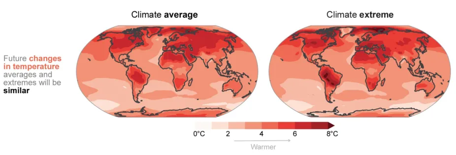

Climate Change: Regional Impacts
Changes in Earth's climate have different effects in different areas of the world. Some places
will warm much more than others, some regions will receive more rainfall, while others are
exposed to more frequent droughts. Regional changes in temperature and precipitation
are having impacts on people and ecosystems. Animals that are not able to tolerate
changes in climate and are not able to move into new areas are threatened by extinction.
Warming Temperatures
Low-lying Coastal Regions and Rising Seas
Not surprisingly, rising sea level is expected to have adverse effects on coastal regions and
islands worldwide. However, the impacts will differ depending on the topography of the land
and its susceptibility to flooding.
Some low-lying coastal regions will be subject to more frequent flooding or even permanent
inundation. Large areas in the countries of Bangladesh and The Netherlands, along with the
U.S. state of Florida and the city of New Orleans are only slightly above sea level, and thus
are at great risk of even slight increases in sea level. Some small island nations in the Pacific
are at such low elevations that they are in danger of being wiped off the map entirely as the
water rises.
Higher sea levels will hasten the erosion of beaches and other types of terrain along the
shoreline. Salty water will seep further inland in estuaries and brackish marshes, altering
ecosystems (many of which serve as nurseries for ocean-going fish and other aquatic creatures).
Hurricane Prone Regions
Regions of the world that are already prone to tropical cyclones (also
known as hurricanes and typhoons) may see more impacts from them
in the future. These storms derive their energy from warm ocean waters,
so their winds become more intense as sea surface temperatures warm. Hurricanes
are also able to carry more water vapor in a warmer climate, causing more rain which
can cause flooding when they make landfall. Also, flooding from storm surge during hurricanes
will wash further inland as sea level rises due to climate change.
Hurricanes occur in six
major regions worldwide: the North Atlantic, the Northeastern Pacific, the Northwestern Pacific,
the Southwestern Pacific, and the North and South Indian Ocean.
Each of these regions may be affected differently by changes to storm patterns caused by
global warming. Hurricane seasons may start earlier and end later, providing more time for
storms to occur. Storms may move into higher latitudes as ocean waters warm. Hurricanes
may form in places where they hadn't before.
High Mountain Regions
Almost all of the world's mountain or alpine glaciers are receding, a trend that is likely
to continue in the years ahead. As glaciers shrink, and in some places disappear, human
communities and ecosystems that rely on glacial meltwater as a supply of fresh water. In
some regions, people depend almost entirely on glaciers for the water they use in towns,
cities, and for agriculture. Much of northern India gets water from Himalayan glaciers, while
large portions of Chile rely on glaciers in the Andes for water. Less water can lead to
changes in ecosystems and a greater incidence of water-borne diseases. In other
mountainous areas, snow typically builds up during the winter and melts in the spring and
summer, flowing down rivers. But warmer temperatures increase the risk of river flooding as
snow melts faster. The changes to snow and glacial ice in mountain regions threatens the
extinction of species that live in unique high-altitude environments.
Regions Affected by El Niño and Other Patterns in the Atmosphere
Cycles such as El Niño and La Niña events and seasonal monsoons in India may change as
the climate warms. Scientists are still trying to improve models of these events, so
predictions of how they may change in the future are somewhat speculative. Disruptions of
the normal patterns, particularly of the monsoons, could affect many millions of people in
areas like India and Bangladesh. El Niño and La Niña affect the Pacific Ocean and
surrounding areas, but scientists are discovering that they also may have an influence on
other areas of the world as well.
The Polar Regions
The Arctic and parts of Antarctica are warming much more quickly than the global average,
a trend that is expected to continue. The extent of sea ice in the Arctic Ocean has been
decreasing rapidly. Some models project a complete loss of sea ice in the summertime in
the Arctic by the middle of the 21st Century. Glaciers and ice sheets in Antarctica and
Greenland are melting too.
Permafrost (frozen ground) usually provides a solid platform for buildings and roadways
in the Arctic. It is solid enough for animals like caribou to migrate over. But thawing permafrost
creates mushy ground, disrupting wildlife and human activities. Also, the thawing of
permafrost releases methane, a powerful greenhouse gas.